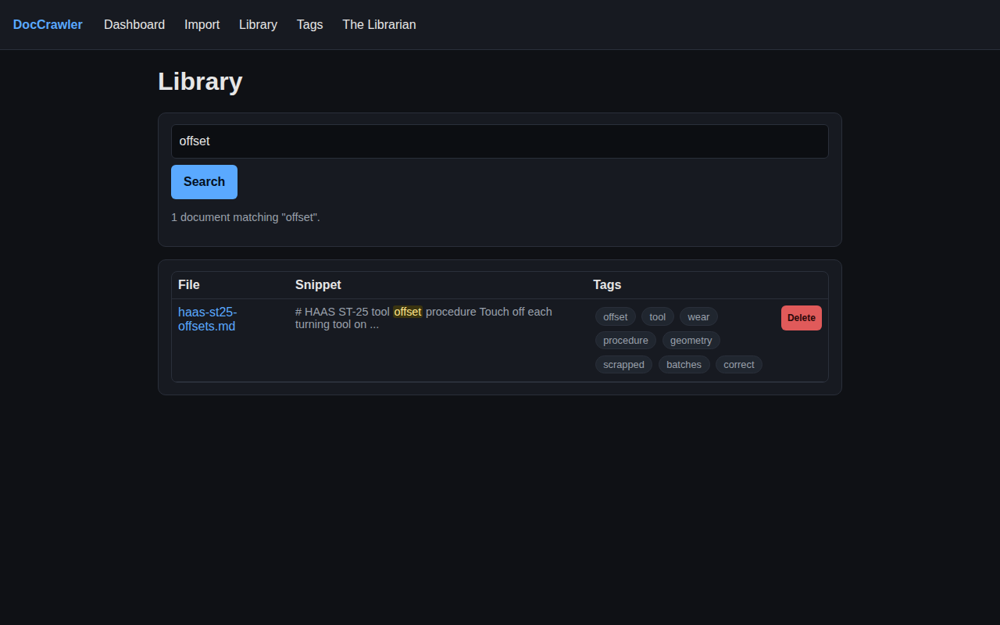

local library · search · the librarian
Point it at a folder and it reads everything — PDFs, Word files, notes, photos of paper — then indexes it, tags it, and answers questions from it. On the phone, with the internet off.
running — on Termux, on the phone
why this exists
Manuals, alarm sheets, receipts, service notes, screenshots of things you meant to read later — they pile up in a Downloads folder where search means scrolling. DocCrawler turns that pile into a library you can search and question, without sending a single file anywhere.
library/YYYY/MM/..txt/.md, pypdf for PDFs, python-docx for Word, Tesseract OCR for images. No OCR installed? The image is still kept, with a warning instead of a crash.Ollama has no Android build, so on the phone it runs inside a Debian container under proot-distro. Getting that to stay up took a run of fixes: a pkill that matched — and killed — its own wrapper script, a server that died the moment its launcher exited, a wrong HOME that made every model disappear, and chat timeouts long enough for a phone CPU to finish thinking. The setup and start scripts now carry all of it, and they are safe to re-run.
A single-user tool: it binds to 127.0.0.1 with no login, on purpose. Auto-tags are a keyword-frequency heuristic, not a classifier. OCR is only as good as the installed Tesseract, and a small local model on a phone is usable, not fast. The Librarian cites its sources — check them for anything that matters.